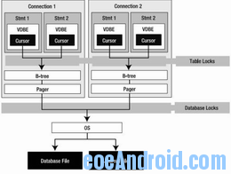

SQLite 设计与概念（一）
1、API
由两部分组成: 核心API(core API) 和扩展API（extension API）
核心API的函数实现基本的数据库操作：连接数据库，处理SQL，遍历结果集。它也包括一些实用函数，比如字符串转换，操作控制，调试和错误处理。
扩展API通过创建你自定义的SQL函数去扩展SQLite。
1.1、SQLite Version 3的一些新特点：
(1)SQLite的API全部重新设计，由第二版的15个函数增加到88个函数。这些函数包括支持UTF-8和UTF-16编码的功能函数。
(2)改进并发性能。加锁子系统引进一种锁升级模型(lock escalation model)，解决了第二版的写进程饿死的问题(该问题是任何一个DBMS必须面对的问题)。这种模型保证写进程按照先来先服务的算法得到排斥锁(Exclusive Lock)。甚至，写进程通过把结果写入临时缓冲区(Temporary Buffer)，可以在得到排斥锁之前就能开始工作。这对于写要求较高的应用，性能可提高400%（引自参考文献）。
(3)改进的B-树。对于表采用B+树，大大提高查询效率。
(4)SQLite 3最重要的改变是它的存储模型。由第二版只支持文本模型，扩展到支持5种本地数据类型。
总之，SQLite Version 3与SQLite Vertion 2有很大的不同，在灵活性，特点和性能方面有很大的改进。
1.2、主要的数据结构(The Principal Data Structures)
SQLite由很多部分组成－parser,tokenize,virtual machine等等。但是从程序员的角度，最需要知道的是:connection,statements,B-tree和pager。它们之间的关系如下：

上图告诉我们在编程需要知道的三个主要方面：API,事务(Transaction)和锁(Locks)。从技术上来说，B-tree和pager不是API的一部分。但是它们却在事务和锁上起着关键作用。
1.3、Connections和Statements
Connection和statement是执行SQL命令涉及的两个主要数据结构，几乎所有通过API进行的操作都要用到它们。一个连接(Connection)代表在一个独立的事务环境下的一个连接A (connection represents a single connection to a database as well as a single transaction context)。每一个statement都和一个connection关联，它通常表示一个编译过的SQL语句，在内部，它以VDBE字节码表示。Statement包括执行一个命令所需要一切，包括保存VDBE程序执行状态所需的资源，指向硬盘记录的B-树游标，以及参数等等。
1.4、B-tree和pager
一个connection可以有多个database对象---一个主要的数据库以及附加的数据库，每一个数据库对象有一个B-tree对象，一个B-tree有一个pager对象(这里的对象不是面向对象的“对象”，只是为了说清楚问题)。
Statement最终都是通过connection的B-tree和pager从数据库读或者写数据，通过B-tree的游标(cursor)遍历存储在页面(page)中的记录。游标在访问页面之前要把数所从disk加载到内存，而这就是pager的任务。任何时候，如果B-tree需要页面，它都会请求pager从disk读取数据，然后把页面(page)加载到页面缓冲区(page cache)，之后，B-tree和与之关联的游标就可以访问位于page中的记录了。
如果cursor改变了page，为了防止事务回滚，pager必须采取特殊的方式保存原来的page。总的来说，pager负责读写数据库，管理内存缓存和页面（page），以及管理事务，锁和崩溃恢复(这些在事务一节会详细介绍)。
总之，关于connection和transaction，你必须知道两件事：
(1)对数据库的任何操作，一个连接存在于一个事务下。
(2)一个连接决不会同时存在多个事务下。
whenever a connection does anything with a database, it always operates under exactly one
transaction, no more, no less.
1.5、核心API
核心API 主要与执行SQL命令有关，本质上有两种方法执行SQL语句：prepared query 和wrapped query。Prepared query由三个阶段构成：preparation，execution和finalization。其实wrapped query只是对prepared query的三个过程包装而已，最终也会转化为prepared query的执行。
1.5.1、连接的生命周期(The Connection Lifecycle)
和大多数据库连接相同，由三个过程构成：
（1）连接数据库(Connect to the database)：
每一个SQLite数据库都存储在单独的操作系统文件中，连接，打开数据库的C API为：sqlite3_open()，它的实现位于main.c文件中，如下：
int sqlite3_open(const char *zFilename, sqlite3 **ppDb){ return openDatabase(zFilename, ppDb, SQLITE_OPEN_READWRITE | SQLITE_OPEN_CREATE, 0);
}
当连接一个在磁盘上的数据库，如果数据库文件存在，SQLite打开一个文件；如果不存在，SQLite会假定你想创建一个新的数据库。在这种情况下，SQLite不会立即在磁盘上创建一个文件，只有当你向数据库写入数据时才会创建文件，比如：创建表、视图或者其它数据库对象。如果你打开一个数据，不做任何事，然后关闭它，SQLite会创建一个文件，只是一个空文件而已。
另外一个不立即创建一个新文件的原因是，一些数据库的参数，比如：编码，页面大小等，只在在数据库创建前设置。默认情况下，页面大小为1024字节，但是你可以选择512-32768字节之间为 2幂数的数字。有些时候，较大的页面能更有效的处理大量的数据。
（2）执行事务(Perform transactions)：
all commands are executed within transactions。默认情况下，事务自动提交，也就是每一个SQL语句都在一个独立的事务下运行。当然也可以通过使用BEGIN..COMMIT手动提交事务。
（3）断开连接(Disconnect from the database)：
主要是关闭数据库的文件。
1.5.2、执行Prepared Query
前面提到，预处理查询(Prepared Query)是SQLite执行所有SQL命令的方式，包括以下三个过程：
(1)Prepared Query：
分析器（parser），分词器(tokenizer)和代码生成器(code generator)把SQL Statement编译成VDBE字节码，编译器会创建一个statement句柄(sqlite3_stmt)，它包括字节码以及其它执行命令和遍历结果集的所有资源。
相应的C API为sqlite3_prepare()，位于prepare.c文件中，如下：
int sqlite3_prepare(sqlite3 *db,
const char *zSql,
int nBytes,
sqlite3_stmt **ppStmt,
const char **pzTail
)
{
int rc;
rc = sqlite3LockAndPrepare(db,zSql,nBytes,0,ppStmt,pzTail);
assert( rc==SQLITE_OK || ppStmt==0 || *ppStmt==0 );
return rc;
}
(2)Execution：虚拟机执行字节码，执行过程是一个步进(stepwise)的过程，每一步(step)由sqlite3_step()启动，并由VDBE执行一段字节码。由sqlite3_prepare编译字节代码，并由sqlite3_step()启动虚拟机执行。在遍历结果集的过程中，它返回SQLITE_ROW，当到达结果末尾时，返回SQLITE_DONE。
(3)Finalization：
VDBE关闭statement，释放资源。相应的C API为sqlite3_finalize()。
通过下图可以更容易理解该过程：
includeinclude
include"sqlite3.h
include
int main(intargc,char**argv){
int rc,i,ncols;
sqlite3 *db;
sqlite3_stmt *stmt;
char *sql;
const char*tail;
//打开数据
rc=sqlite3_open("foods.db",&db);
if(rc){
fprintf(stderr,"Can'topendatabase:%sn",sqlite3_errmsg(db));
sqlite3_close(db);
exit(1);
}
sql="select * from episodes";
//预处理
rc=sqlite3_prepare(db,sql,(int)strlen(sql),&stmt,&tail);
if(rc!=SQLITE_OK){
fprintf(stderr,"SQLerror:%sn",sqlite3_errmsg(db));
}
rc=sqlite3_step(stmt);
ncols=sqlite3_column_count(stmt);
while(rc==SQLITE_ROW){
for(i=0;ifprintf(stderr,"'%s'",sqlite3_column_text(stmt,i));
}
fprintf(stderr,"n");
rc=sqlite3_step(stmt);
}
//释放statement
sqlite3_finalize(stmt);
//关闭数据库
sqlite3_close(db);
return0;
}